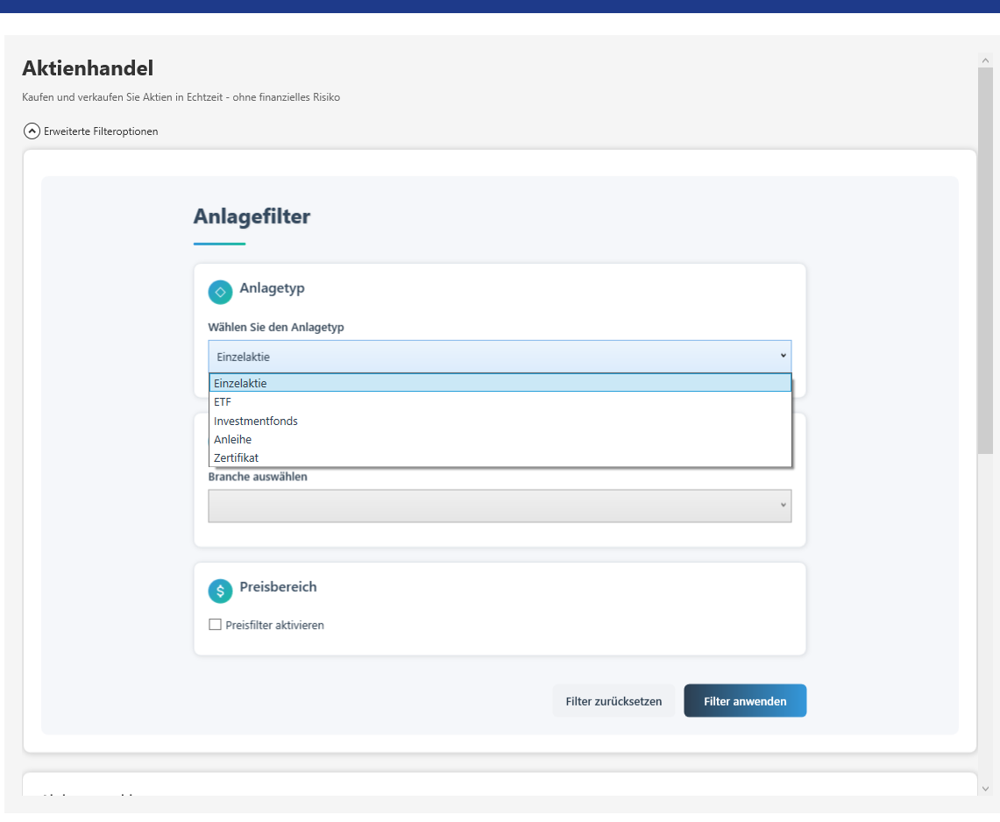
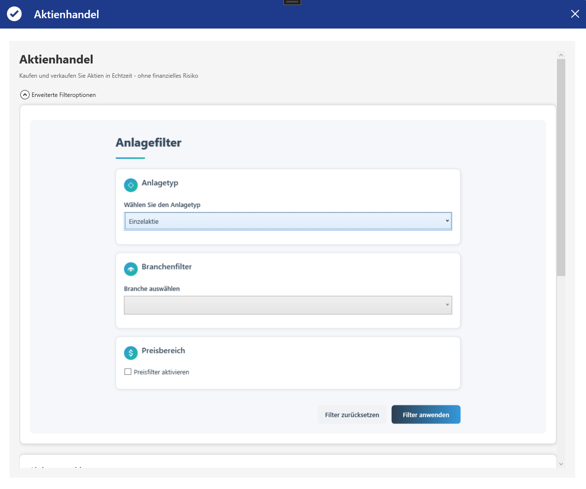
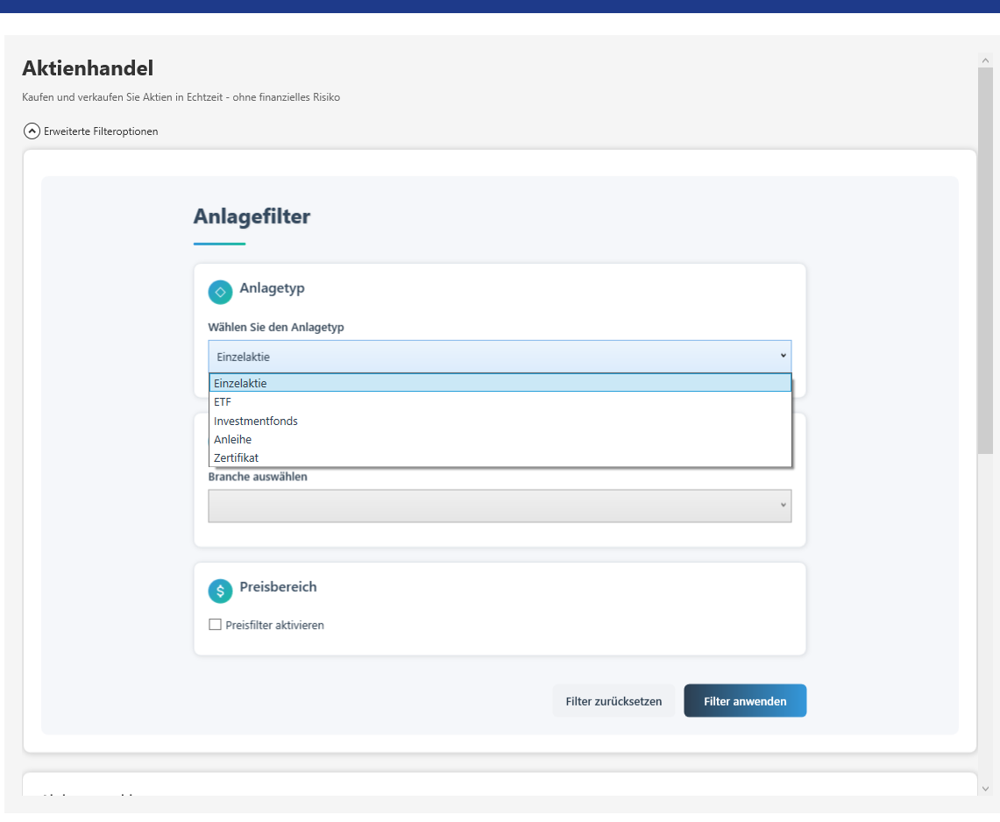
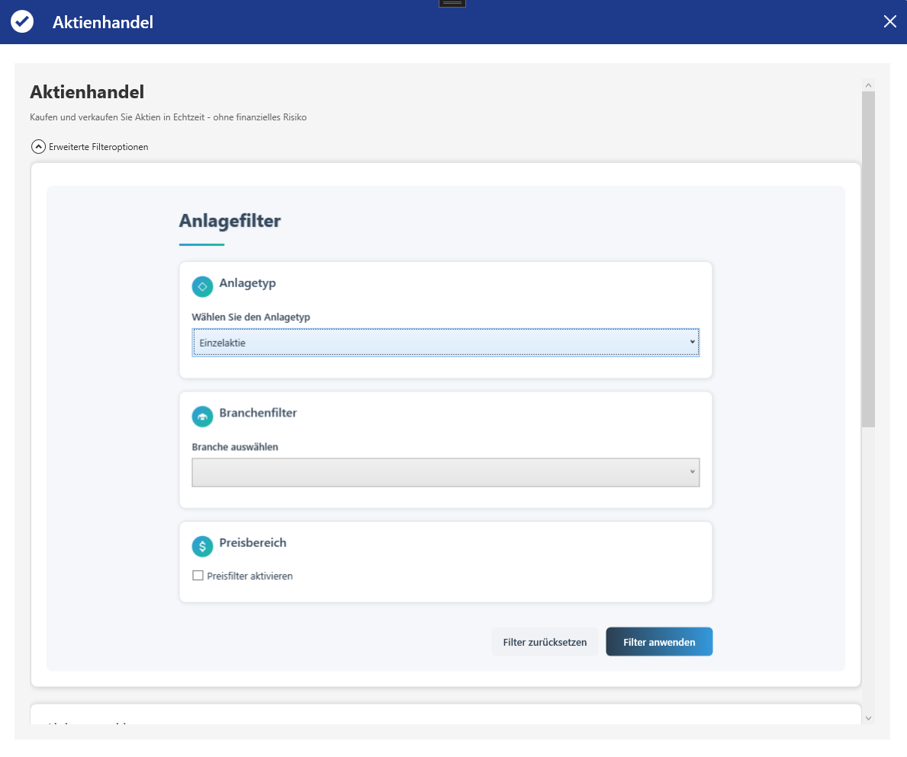

Meine Projekte
Eine Auswahl meiner Arbeiten

Virtuelles Betriebssystem (SimOS)
Ein persönliches Hobby-Projekt: Vollständige Desktop-OS-Simulation mit Fenstermanagement, Prozess-Manager, virtualem Dateisystem und integrierten Apps wie Terminal, Explorer und Browser. Inklusive Sperrbildschirm und System-Tray - entwickelt aus purer Freude am Programmieren!
Blazor Oldtimer-Vermietung
Im Rahmen eines Schulprojekts beschäftigten wir uns mit dem Web-Framework Blazor und evaluierten die Möglichkeit, einen performanten Datenbankzugriff mithilfe von Dapper umzusetzen. Ziel war es, die Anwendung lokal über einen Webserver (localhost) bereitzustellen und so ein vollständiges, praxisnahes Anwendungsszenario abzubilden.


 



Virtuelle Börsenplattform
Meine Abschlussarbeit der HBFSWI: Trading-Simulator mit echten Marktdaten über die Twelve Data API. Portfolio-Management für 100+ handelbare Aktien und ETFs, E-Mail-Service und Echtzeit-Gewinn/Verlust-Berechnung.
Festplatten-Analyzer
Entstanden aus einem konkreten Problem: Wie finde ich schnell, was meinen Speicherplatz belegt? System-Tool zur Speicherplatz-Optimierung mit intelligentem System-Schutz, Multi-Drive-Scanning, sicheren Löschfunktionen und Export-Features.